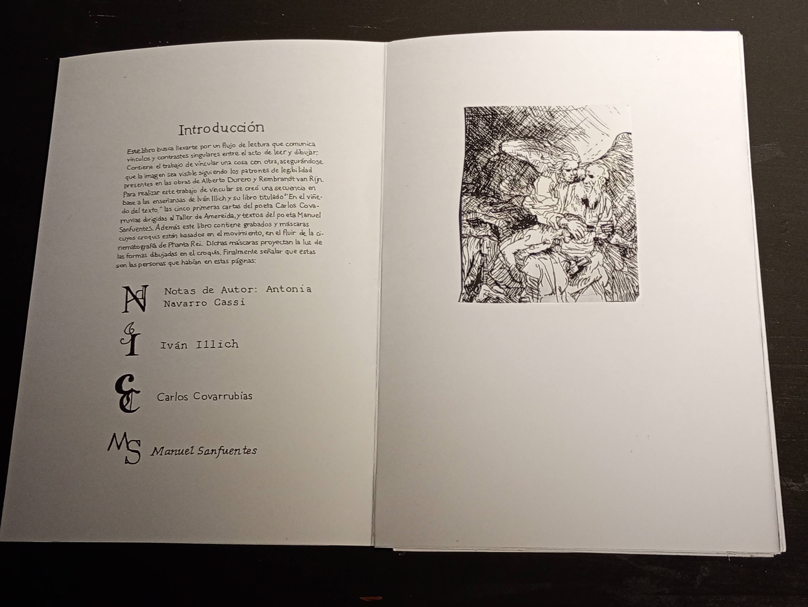
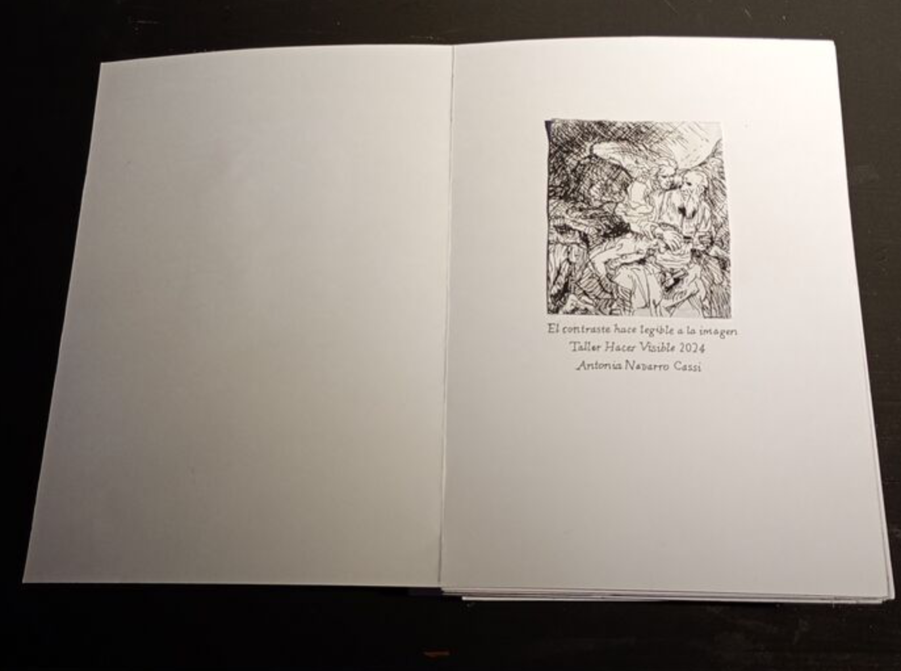
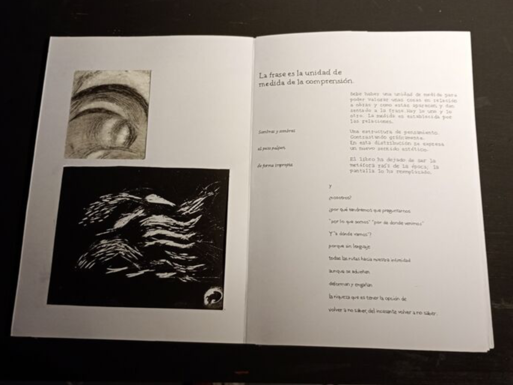
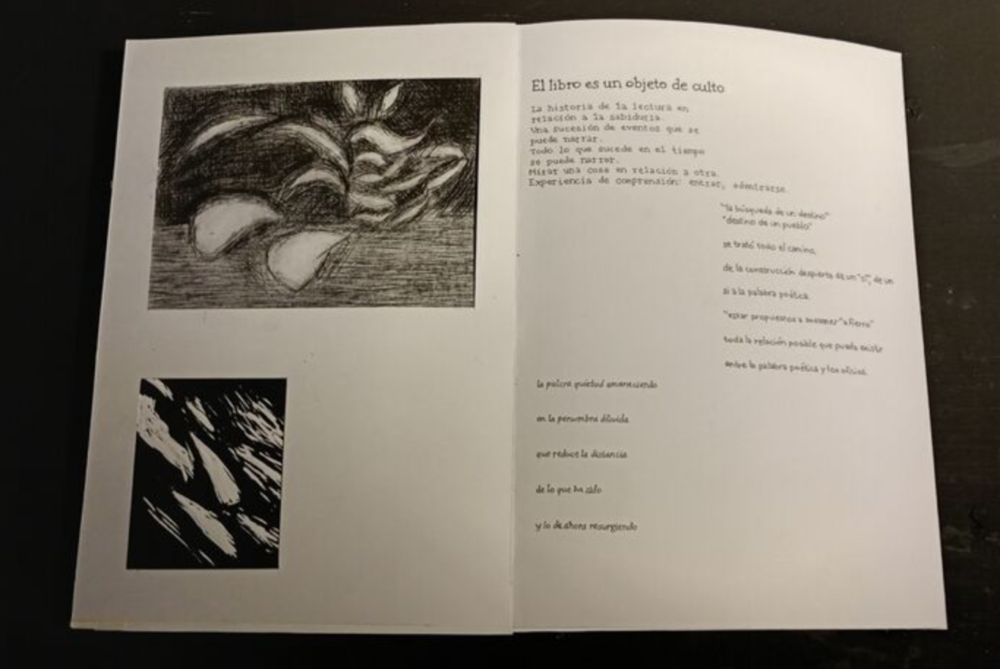

Hacer visible




El proyecto final consistió en crear una edición en base a grafias de alto contraste acompañado de citas del libro de Amereida. Trabaje con creando grabados que talle e imprimí. Aprendí que los contrastes dan legibilidad a las imagen.